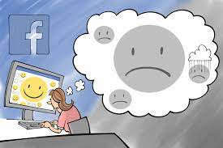

Top 5 Technologies to watch out for in 2022
Phew! Another pandemic year has gone by. Welcome to yet another year of hope and recovery. In 2021 we saw many tech trends accelerate in response to the 'living with Covid' world. If the past two years have proved anything, it’s that the world needs to adapt quickly to our new reality. In 2021, companies focused on operational agility more than ever before.
Tech has sustained us through the pandemic and continues to redefine and restructure how we work, live and interact. But what does next year hold in store?
Automation
Automation tech has entered everyone’s daily lives in different ways and most of us don’t even realise it. Self-driving vehicles, the data cleaning system of your smart devices, and smart home notifications are some basic examples of automation technology. Around half of all existing work could be automated in the next few decades, as next-level process automation and virtualization become more commonplace.
Metaverse
Popularised by Snow Crash, a 1992 sci-fi novel by Neal Stephenson, the metaverse refers to a collection of shared online worlds in which physical, augmented, and virtual reality converge. People can hang out with friends, work, visit places, buy goods and services, and attend events. While many virtual worlds exist online, users currently can’t move between them while retaining their identities and assets. The eventual metaverse could solve this problem, turning disparate online worlds into a single, seamless entity. It has even been dubbed the next evolution of the internet.
Artificial Intelligence
Artificial intelligence's ability to learn and detect novel patterns can accelerate detection, containment and response, easing the burden on security operations centre analysts and allowing them to be proactive. One approach to building a secure infrastructure is the use of distributed ledgers, such as blockchain. Which brings us to the next trend.
Blockchain and DLTs
Blockchain and other distributed ledger technologies (DLT) are changing the nature of doing business and helping companies reimagine how they manage tangible and digital assets. As companies adopt blockchain and DLT, creative use cases are cropping up, transforming the nature of doing business across organisational boundaries. The use cases include self-sovereign data, trusted data-sharing, supply chain transparency among others.
Connectivity
Digital connections, powered by 5G and the Internet of Things (IoT), have the potential to unlock economic activity. Implementing faster connections in “mobility, healthcare, manufacturing and retail could increase global GDP by $1.2 trillion to $2 trillion by 2030,” McKinsey believes. “Far-greater network availability and capability will drive broad shifts in the business landscape, from the digitization of manufacturing (through wireless control of mobile tools, machines and robots) to decentralized energy delivery and remote patient monitoring.”
6 months without Social media, this is what happened!
It’s been six months since I deleted my social media accounts. Six months without constantly scrolling Twitter, without trying to build my Instagram following, and without constantly updating my Facebook page with upcoming show announcements.
After a month I finally started breaking the urge to check my phone every five minutes. Not having those apps on my phone or computer meant there was no need to constantly check my devices. Plus, eliminating those apps caused me to eliminate other apps that were wasting my time, too. Now my phone only has one main page of apps and I’m trying to whittle it down even more. I only use apps that are necessary for my business (banking, calendar, show tech, air travel, hotel), health (meal tracking, running tracker, gym membership), city use (parking, GPS, weather), productivity (to-do lists, reminders), and creativity (photo, video, podcasts, music).
No YouTube, no news apps, no e-mail, and no games. I’ve tried to make my phone as unappealing as possible. Deleting my social media was a gateway drug to eliminating even more distractions from my life and now I’M AN ADDICT! GIVE ME A HIT OF THAT PURE, UNINTERRUPTED FREE TIME BABY!!!!
That was my observation after one month. At that time I was curious about three other things:
1. Would anyone even notice I had left social media?
2. Would anyone try to talk me back onto it?
3. Would my business suffer?
The answer to number 1 is a resounding NO. No one cared. No one noticed I was gone and no one asked about it. The truth is, any friendships that mattered were real life, in-person relationships with my closest friends. Everything else online were shallow connections that were part of a total of “fans” or “followers”. They weren’t real friends and, as such, they didn’t know I went missing and I haven’t missed them either.
I’m still in touch with the people that matter and when we see each other we actually have things to talk about.
As for Number 2, there have been a few people tell me it’s a necessity for what I do. Management, agents, friends, even family have been somewhat insistent that social media is a requirement for success in my field. But, I’ve resisted their calls. If major celebrities can succeed without it, then surely I can, too. There have to be other ways to find success as an entertainer, right?
Which brings us to Number 3. Has my business suffered without social media?
NO! It hasn’t. If anything, it’s getting better because I have more time to focus on things that actually make my show and business better, without getting caught up in the constant need to create content for various online accounts. And, inquiries for my services have stayed the same which means people weren’t finding me through social media before and they definitely aren’t now.
There are a few annoying things. The media loves to quote twitter or instagram comments like it’s actual news. It’s ridiculous. And I’m blown away at how many times some of my friends say something like “Did you see such-and-such on facebook?” without realizing how weird it is to be so fully immersed in a world that only exists online.
After a few months, things got pretty normal without social media. I was using my phone differently. I was reading more and spending my time doing other things. I wasn’t thinking about other people’s instagram posts or worried about someone’s comment on my facebook feed. In fact, I wasn’t thinking about twitter, instagram, or facebook at all.
Staying informed is important, especially in our current situation with the pandemic, protests, an election year, and the biggest race series of all-time. Without social media you can still be aware of what’s going on.
The interesting thing about everyone I’ve talked to is that it seems everyone hates their life on social media but they think it’s impossible to break away.
Up until now I’ve been telling people “I’m not telling you to delete social media, but it’s been really good for me” but I think I’m done with that. I want you to come over to the dark side with me.
QUIT SOCIAL MEDIA.
Now’s the time. Start today and you’re only six months behind me.
Related Articles